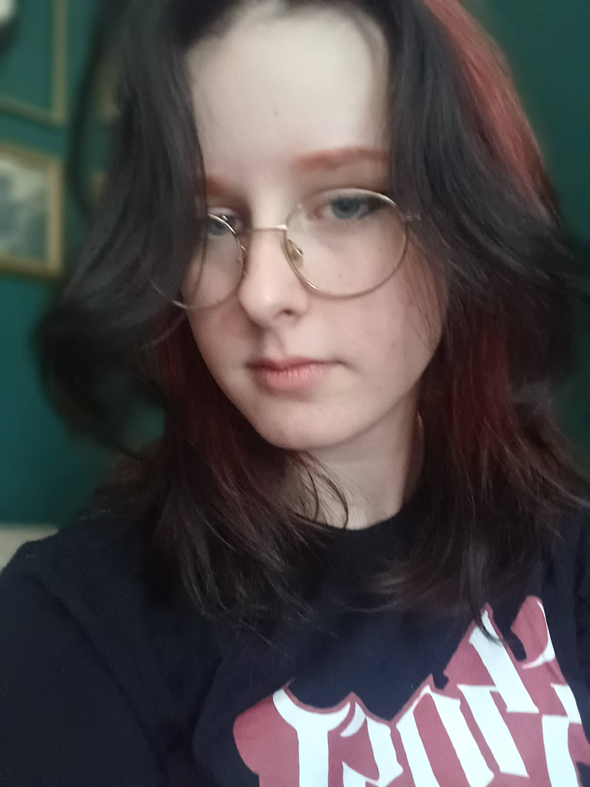

My name is Eliza, and I am a game developer with a passion for open-world exploration games.
Ever since I was a child, I've had a passion for creating games.
I immediately started looking for a school, which led me to Mediacollege Amsterdam.
From the moment I joined this school, I became very eager to learn. always wanted to learn more.
Recently, I have developed an interest in biology, along with the opportunities of combining the two.
My learning journey is far from over to say the least.
I am a 19 year old female game-developer that also happens to enjoy games, greek mythology, musicals, music in general, good stories,
and spending time with my friends.
I am currently studying at Mediacollege Amsterdam, and looking for a second internship. I enjoy working together in teams when communication
is clear. I have ADHD, which means I really need to be aware of what is happening. I don't enjoy losing track of what my team members are doing.
Skills I possess are:
⛤ Unity (C#)
⛤ Unreal Engine (Blueprints)
⛤ HTML and css
⛤ Scrum
One of my favorite pass times is gaming. I play multiple games, such as Minecraft, Phasmophobia, Genshin Impact, Stardew Valley, and many more. When playing games, I usually play with friends. It's probably when I am most social.
I have yet to cosplay, but I am currently working on my first ever costume. Cosplaying allows me to express my creativity through dressing up as fictional characters, and creating their outfits. Along with that, I enjoy meeting fellow cosplayers and seeing other cosplays.
There are multiple instruments that I play! The instruments I play are guitar, ukulele, and I have basic knowledge of piano chords. Along with that I enjoy singing. Specifically musical songs.
This is a hobby I don't do quite as often as I used to, but I do enjoy drawing and doodling silly things here and there. Drawing is a way I like to express myself, and I like doing either traditional art, or pixel art.